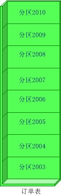

Con la amplia popularización de las aplicaciones de Internet, el almacenamiento y acceso a datos masivos se ha convertido en un cuello de botella en el diseño de sistemas. Para una aplicación de Internet a gran escala, millones o incluso cientos de millones de PV diarios sin duda generan una carga bastante alta en la base de datos, causando enormes problemas para la estabilidad y escalabilidad del sistema.
1.Equilibrio de cargaTecnología
Un clúster de equilibrio de carga está compuesto por un grupo de sistemas informáticos independientes entre sí, conectados a través de redes convencionales o redes privadas, y enlazados por enrutadores. Cada nodo colabora entre sí, compartiendo la carga y equilibrando la presión. Para el cliente, todo el clúster puede considerarse como un servidor independiente de alto rendimiento.
1. Principio de implementación
Para implementar la tecnología de equilibrio de carga en bases de datos, primero se necesita un controlador que pueda gestionar las conexiones a la base de datos. Aquí, se interrumpe la conexión directa entre la base de datos y el programa; todos los programas acceden a esta capa intermedia, y luego la capa intermedia accede a la base de datos. De esta manera, podemos controlar específicamente el acceso a cada base de datos y, además, adoptar estrategias de equilibrio efectivas según la carga actual de la base de datos para ajustar a qué base de datos conectarse en cada ocasión.
2. Implementar la sincronización de datos en múltiples bases de datos
Para el equilibrio de carga, lo más importante es que los datos de todos los servidores estén sincronizados en tiempo real. Esto es imprescindible para un clúster, porque si los datos no están sincronizados en tiempo real, el usuario podría leer datos de un servidor que difieran de los de otro servidor, lo cual no es permisible. Por lo tanto, es necesario implementar la sincronización de datos en la base de datos. De este modo, se pueden tener múltiples recursos al realizar consultas, logrando el equilibrio. Un método bastante común es el clúster Moebius for SQL Server. Este clúster utiliza un enfoque en el que el programa central reside en la base de datos de cada máquina; este programa central se denomina middleware Moebius for SQL Server, cuya función principal es monitorear los cambios de datos en la base de datos y sincronizar los datos modificados a otras bases de datos. El cliente recibe la respuesta solo después de que se completa la sincronización de datos. Dado que el proceso de sincronización se realiza de forma concurrente, el tiempo de sincronizar a múltiples bases de datos es básicamente igual al de sincronizar a una sola; además, la sincronización se lleva a cabo en un entorno transaccional, lo que garantiza la consistencia de los datos en todo momento. Precisamente gracias a la innovación de que el middleware Moebius reside en la base de datos, este no solo puede conocer los cambios de datos, sino también las sentencias SQL que los provocan, y adoptar inteligentemente diferentes estrategias de sincronización según el tipo de sentencia SQL para minimizar el costo de la sincronización de datos.

Si la cantidad de registros es muy pequeña y el contenido de los datos no es grande, se sincronizan los datos directamente.
Si la cantidad de registros es muy pequeña, pero contienen tipos de datos grandes, como texto, datos binarios, etc., primero se comprimen los datos y luego se sincronizan, reduciendo así el uso del ancho de banda de la red y el tiempo de transmisión.
Si la cantidad de registros es grande, el middleware obtiene las sentencias SQL que causaron el cambio de datos, luego analiza dichas sentencias, examina su plan de ejecución y costo de ejecución, y elige si sincronizar los datos o las sentencias SQL hacia otras bases de datos. Esta situación es muy útil al ajustar la estructura de tablas o modificar datos en lotes.
3. Ventajas y desventajas
(1) Alta escalabilidad: cuando el sistema necesita una mayor velocidad de procesamiento de la base de datos, simplemente se agregan servidores de base de datos para expandirse.
(2) Mantenibilidad: cuando un nodo falla, el sistema detecta automáticamente la falla y transfiere las aplicaciones del nodo fallido, garantizando la operación continua de la base de datos.
(3) Seguridad: como los datos se sincronizan en múltiples servidores, se puede lograr redundancia del conjunto de datos, garantizando la seguridad mediante múltiples copias. Además, coloca exitosamente la base de datos en la red interna, protegiendo mejor la seguridad de la base de datos.
(4) Facilidad de uso: es completamente transparente para las aplicaciones; el clúster se expone como una única IP.
(1) No puede distribuir la carga según la capacidad de procesamiento del servidor web.
(2) Una falla del equilibrador de carga (controlador) puede provocar la parálisis de todo el sistema de base de datos.
2. Separación de lectura y escritura de la base de datos
1. Principio de implementación: la separación de lectura y escritura, en términos simples, consiste en separar las operaciones de lectura y escritura de la base de datos en diferentes servidores de base de datos, lo que permite reducir eficazmente la presión sobre la base de datos y también la presión de E/S. La base de datos principal proporciona operaciones de escritura, mientras que la base de datos secundaria proporciona operaciones de lectura. De hecho, en muchos sistemas predominan las operaciones de lectura. Cuando la base de datos principal realiza una operación de escritura, los datos deben sincronizarse con la base de datos secundaria para garantizar eficazmente la integridad de la base de datos.

(La proporción de lectura a escritura de eBay es 260:1; separación de lectura y escritura de eBay)

(Distribución de bases de datos de Microsoft)
2. Método de implementación: en MS SQL Server, se puede utilizar el método de definición de publicación para implementar la replicación de bases de datos y lograr la separación de lectura y escritura. La replicación es una tecnología que copia un conjunto de datos desde un origen de datos a múltiples destinos, y es una forma eficaz de publicar un mismo dato en múltiples sitios de almacenamiento. Con la tecnología de replicación, los usuarios pueden publicar un dato en varios servidores. La tecnología de replicación puede asegurar que los datos distribuidos en diferentes ubicaciones se sincronicen y actualicen automáticamente, garantizando así la consistencia de los datos. Hay tres tipos de tecnología de replicación en SQL Server: replicación de instantáneas, replicación transaccional y replicación de combinación (merge). SQL Server maneja la replicación principalmente mediante publicaciones y suscripciones. El servidor donde se encuentran los datos de origen es el servidor de publicación, responsable de publicar los datos. El servidor de publicación copia todos los cambios de los datos a publicar al servidor de distribución. El servidor de distribución contiene una base de datos de distribución, que recibe todos los cambios de datos, los guarda y luego los distribuye a los servidores suscriptores.
3. Ventajas y desventajas
(1) Baja sincronización en tiempo real de los datos: los datos no se sincronizan en tiempo real con los servidores de solo lectura; cuando los datos se escriben en el servidor principal, solo se pueden consultar después de la siguiente sincronización.
(2) Baja eficiencia de sincronización con grandes volúmenes de datos: cuando el volumen de datos en una sola tabla es demasiado grande, las inserciones y actualizaciones se vuelven muy deficientes en rendimiento debido a problemas como índices y E/S de disco.
(3) Conexión simultánea a múltiples bases de datos (al menos dos): se requiere conectar al menos a dos bases de datos; las operaciones reales de lectura y escritura se realizan en el código del programa, lo que puede causar confusión.
(4) La lectura tiene alto rendimiento, alta confiabilidad y escalabilidad: en los servidores de solo lectura, al no haber operaciones de escritura, se reducen en gran medida los problemas de rendimiento como la E/S de disco, mejorando considerablemente la eficiencia; los servidores de solo lectura pueden emplear equilibrio de carga, y la base de datos principal se publica en múltiples servidores de solo lectura para lograr la escalabilidad de las operaciones de lectura.
3. Fragmentación de bases de datos (distribuida)
Mediante ciertas condiciones específicas, los datos almacenados en una misma base de datos se distribuyen en múltiples bases de datos, logrando un almacenamiento distribuido. A través de reglas de enrutamiento se accede a la base de datos específica. De esta manera, cada acceso no se dirige a un solo servidor, sino a N servidores, lo que reduce la presión de carga de una sola máquina.
Fragmentación vertical (longitudinal): se refiere a dividir según módulos funcionales, por ejemplo, en base de datos de pedidos, base de datos de productos, base de datos de usuarios... En este enfoque, las estructuras de tabla entre múltiples bases de datos son diferentes.
Fragmentación horizontal (transversal): se divide y guarda los datos de una misma tabla en diferentes bases de datos; las estructuras de tabla en estas bases de datos son exactamente iguales.

(Fragmentación vertical)

(Fragmentación horizontal)
1. Principio de implementación: para usar la fragmentación vertical, principalmente hay que considerar si el tipo de aplicación es adecuado para este método. Por ejemplo, si el sistema puede dividirse en sistema de pedidos, sistema de gestión de productos, sistema de gestión de usuarios, y los módulos de negocio son relativamente claros, la fragmentación vertical puede cumplir bien la función de dispersar la presión de la base de datos. Los sistemas con módulos de negocio poco definidos y alto acoplamiento (asociaciones entre tablas) no son adecuados para este método. Sin embargo, la fragmentación vertical no puede resolver por completo todos los problemas de presión. Por ejemplo, si hay una tabla de pedidos de 50 millones de registros, la presión sobre la base de datos de pedidos seguirá siendo alta. Si necesitamos insertar un nuevo registro en esta tabla, después de la inserción, la base de datos reestructurará los índices de la tabla; el costo del sistema de crear índices para 50 millones de filas no se puede ignorar. Por el contrario, si dividimos esta tabla en 100 tablas, desde table_001 hasta table_100, los 50 millones de registros se distribuyen promediadamente, y cada subtabla tendrá solo 500,000 filas. En ese caso, el tiempo para crear índices después de insertar datos en una tabla de solo 500,000 filas disminuirá en órdenes de magnitud, mejorando enormemente la eficiencia de ejecución de la base de datos y aumentando su concurrencia. Este tipo de fragmentación es la fragmentación horizontal.
2. Método de implementación: la fragmentación vertical es relativamente simple de implementar; solo se necesita acceder a diferentes bases de datos según el nombre de la tabla. Hay muchas reglas para la fragmentación horizontal; aquí se resumen algunos puntos de experiencias previas.
(1) Fragmentación secuencial: por ejemplo, se puede fragmentar según la fecha del pedido por año. Los pedidos de 2003 se colocan en db1, los de 2004 en db2, y así sucesivamente. Por supuesto, también se puede fragmentar según el estándar de la clave primaria.
Ventajas: se puede migrar parcialmente.
Desventajas: distribución desigual de los datos; por ejemplo, los pedidos de 2003 pueden ser 1 millón, y los de 2008 pueden ser 5 millones.
(2) Fragmentación por hash con módulo: se aplica hash a user_id (o si user_id es de tipo numérico, se puede usar directamente el valor de user_id). Luego se usa un número específico; por ejemplo, si la aplicación necesita dividir una base de datos en 4 bases de datos, usamos el número 4 para realizar la operación de módulo sobre el valor hash de user_id, es decir, user_id % 4. De esta manera, cada operación tiene cuatro posibles resultados: si el resultado es 1, corresponde a DB1; si es 2, corresponde a DB2; si es 3, corresponde a DB3; si es 0, corresponde a DB4. Así, los datos se distribuyen de manera muy uniforme entre las 4 bases de datos.
Ventajas: distribución uniforme de los datos.
Desventajas: es problemático al migrar datos; no se pueden distribuir los datos según el rendimiento de la máquina.
(3) Guardar la configuración de la base de datos en una base de datos de autenticación.
Consiste en crear una base de datos (DB) que almacene por separado la relación de mapeo de user_id a DB. Cada vez que se accede a la base de datos, primero se debe consultar esta base de datos para obtener la información específica de la DB, y solo entonces se puede realizar la operación de consulta necesaria.
Ventajas: alta flexibilidad, relación uno a uno.
Desventajas: se necesita una consulta adicional antes de cada consulta, lo que causa cierta pérdida de rendimiento.
Fuente: http://www.codeceo.com/article/db-solutions.html